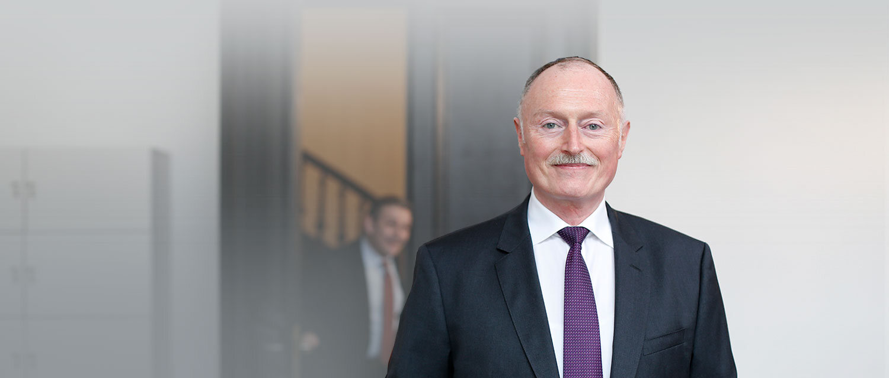
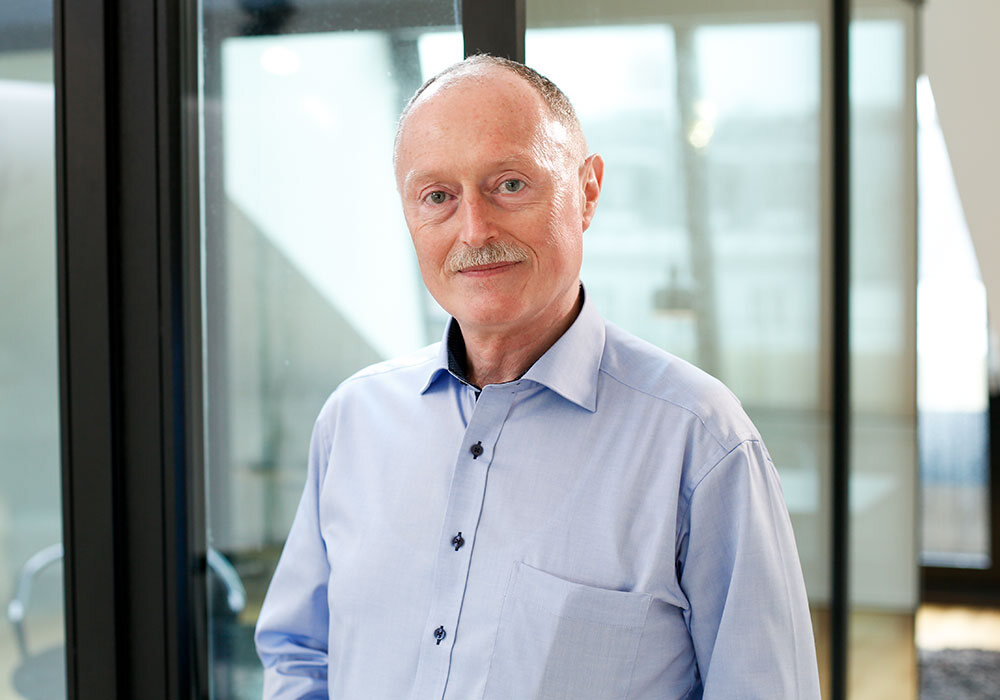
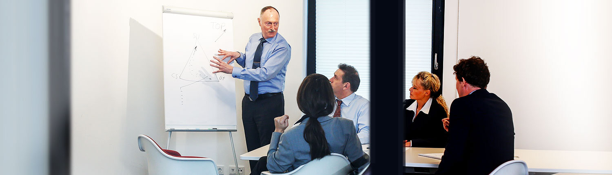

Dr.-Ing. Eberhard Müller.
Promovierter Ingenieur, Forschung bei Fraunhofer, Stationen im Konzern, seit 2007 Interim Manager.

Vom Institut in die Geschäftsleitung.
Ich bin promovierter Ingenieur und war zu Beginn meiner Berufslaufbahn in der Forschung (Fraunhofer Institut) national und international tätig. 1997 folgten unterschiedliche Stationen in Festanstellungen bei global agierenden Unternehmen. Seit 2007 bin ich erfolgreich als Interim Manager aktiv. Als General Manager oder in einem meiner Schwerpunktbereiche Einkauf, SCM und Logistik übernehme ich Tätigkeiten als CEO, CRO, CPO und CDO sowie als Projektleiter für Change- und Growth-Anlässe.
Change, Sanierung, Restrukturierung.
Ich bringe ein breites und bewährtes Wissen aus Changeprojekten sowie Sanierungs- und Restrukturierungsmandaten mit. So gelingt es mir, mich in kürzester Zeit in Unternehmensstrategie und -abläufe einzuarbeiten und schnell erste Erfolge vorzuweisen. Ich arbeite immer im Gesamtkontext des Unternehmens und binde andere Abteilungen und Mitarbeiter mit ein. Hier kommt mir zugute, dass ich schon häufiger Netzwerke in Unternehmen für Synergie- und Performance-Management aufgebaut habe.
Unternehmensstrategie überprüfen, strategische Weiterentwicklung des Unternehmens vorantreiben, Mehrwerte schaffen: Ich handele stets wertbeitragsorientiert. Die Verbesserung der Wettbewerbsfähigkeit meiner Mandanten steht dabei im Fokus. Dabei geht es darum, neue Produkte, Services, Märkte zu finden, Mehrwerte durch Produkte zu heben oder neue Perspektiven aufzuzeigen. Dafür entwickele oder optimiere ich modulare und skalierbare Business Cases und Geschäftsprozesse, die den Unternehmen den Weg freimachen zu neuen Horizonten. Im Anschluss begleite ich deren Implementierung, auch wenn es darum geht, Systeme, Abläufe, Prozesse und Strukturen passend dazu auf der IT-Seite anzupassen.


Technisch machbar, wirtschaftlich sinnvoll.
Als Spezialist mit generalistischem Hintergrund bin ich genau der Richtige, wenn es darum geht, Mehrwerte und Chancen aus der Digitalisierung für Unternehmen zu identifizieren, zu entwickeln und nutzbar zu machen, um Geschäftsmodelle zukunftsfähig zu machen.
Es gelingt mir gleichzeitig, im Rahmen einer Kosten-/Nutzen-Abwägung optimale Lösungen für meine Auftraggeber zu erarbeiten. Ich finde die richtige Balance zwischen technisch machbar und wirtschaftlich, unternehmensstrategisch sinnvoll und denke Änderungen in Geschäftsmodellen auch von der IT-Seite her. Mutig sein, den ersten Schritt gehen, neue Ideen entwickeln: Ich bin als „Digitalisierungspionier“ der Innovator im Unternehmensumfeld.
Fordern und fördern haben einen festen Platz.
Ich habe den Anspruch, stets die optimale Lösung und Umsetzung für meine Auftraggeber zu erreichen. Dafür bringe ich neben ausgewiesen fachlichen Kenntnissen auch die wichtigen Soft Skills mit. So gelingt es mir, schnell Menschen für mich und die gemeinsamen Ziele zu gewinnen. Als Diplomat bringe ich Menschen zusammen, vermittele und führe zu einem gemeinsamen Erfolg. Dazu stehe ich für eine offene Unternehmenskultur und trage in der täglichen Arbeit meinen Teil dazu bei. Denn nur wenn alle Stimmen im Unternehmen gehört und bewertet werden, ergibt sich ein stimmiges Gesamtbild der aktuellen Lage. Gespräche mit Mitarbeitern aller Hierarchieebenen gehören deshalb zum Tagesgeschäft.
Fordern und fördern haben auf meiner Agenda einen festen Platz. So gelingt es, Mitarbeiter des Unternehmens zu motivieren und zu einem gemeinsamen Ziel zu bringen. Als unternehmerisch denkender Interim Manager erkenne ich Chancen und handele konsequent. Gleichzeitig übernehme ich in meinen Mandaten on-the-Job eine wichtige Rolle in der (Weiter-)Qualifizierung der Mitarbeiter.

Wertorientiert und mit Fokus auf nachhaltige Erfolge.
Als Interim Manager und Berater in Personalunion stehe ich auch dafür, die Ergebnisse der beratenden Tätigkeiten als Interim Manager aktiv umzusetzen. Dabei schätze ich eine kreative und iterative Herangehensweise. Die Annäherung an das Hauptziel erfolgt modular und Stück für Stück: Mein Ziel sind schnelle Zwischenerfolge mit Substanz. Das Hauptziel verliere ich dabei nie aus den Augen.
Eine wertorientierte Denkweise und der Fokus auf nachhaltige Erfolge: Ich lebe Werte vor und vermittle diese an die beteiligten Personen. Dadurch gelingt es mir, Strukturen, Prozesse und Maßnahmen sinnhaft aufzuladen und damit nachhaltig im Unternehmenskontext zu verankern. Meine Stärken liegen in der Analyse und Konzeption sowie einer professionellen Umsetzung.
Bereits seit meinen ersten beruflichen Jahren besitze ich eine hohe internationale Ausrichtung. Erst im Forschungsumfeld, später auf Unternehmensseite habe ich internationale Projekte verantwortet und länderübergreifend Teams geführt und gesteuert. Neben emotionalen und empathischen Skills ist hier ein professionelles Projektmanagement mit den entsprechenden Tools der Schlüssel zum Erfolg.
Wo ich gearbeitet habe.
- Automotive
- Windindustrie
- Chemie / Pharmazie
- Gesundheitsbranche / Fachhandel / Medizintechnik
- Maschinenbau
- Solarindustrie
- Elektrotechnik / Elektronik
- Metallverarbeitung
Was ich übernehme.
- Leiter Einkauf
- Leiter Logistik
- Leiter Supply Chain Management
- Restrukturierer
- Leiter Business Unit / Geschäftsleitung
Vernetzt in vier Verbänden.
DDIM, VDI, BME und BVL. DDIM-Mitgliedszertifikat · DDIM-Managerprofil
Lernen wir uns kennen.
Sie möchten mich besser kennenlernen. Gerne stehe ich Ihnen für einen Gesprächstermin zur Verfügung.
Gesprächstermin anfragenHeinrich-Delp-Str. 194
64297 Darmstadt